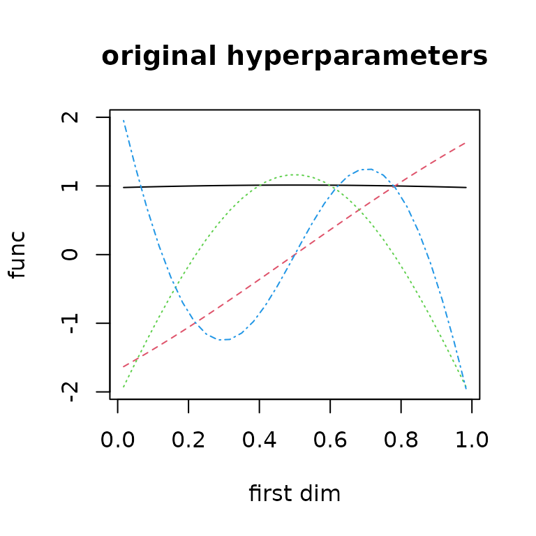
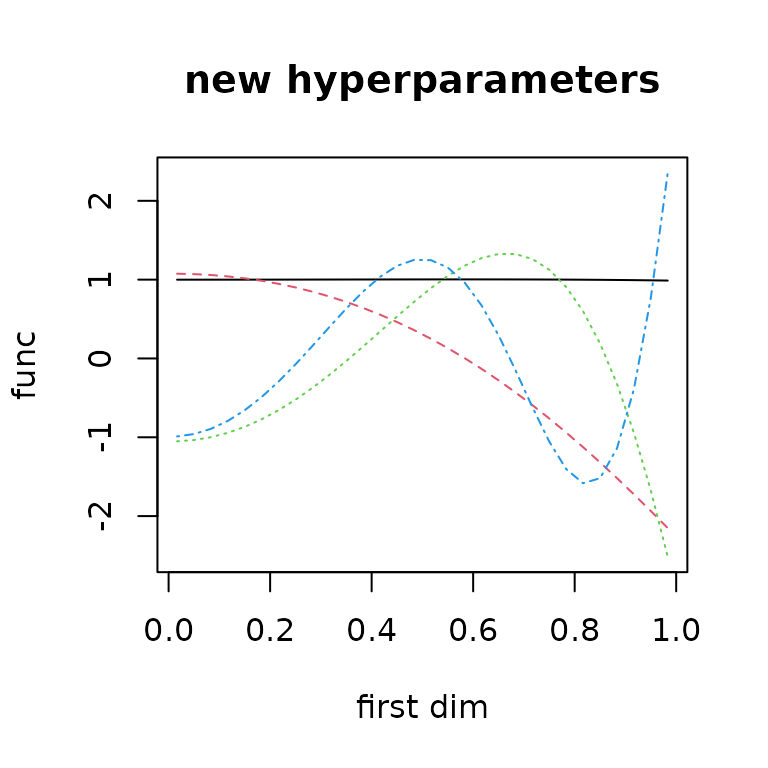
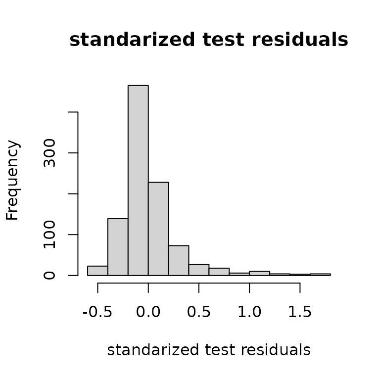
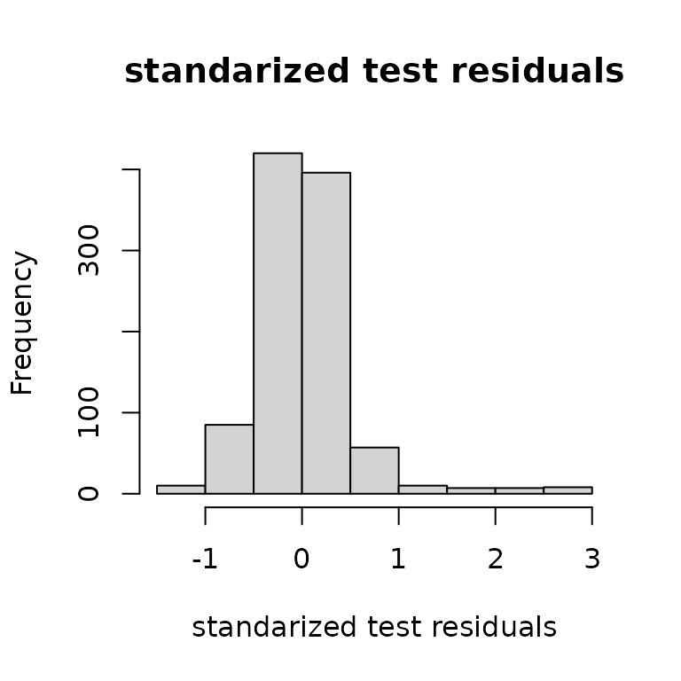

This page is designed to explain how ?lpdf objects can be used for automated learning of hyperparameters and general fitting of predictors.
Let’s set things up for a 3 dimensional example.
om = new(outermod)
d = 3
setcovfs(om, rep("mat25pow",d))
knotlist = list(seq(0.01,0.99,by=0.02),
seq(0.01,0.99,by=0.02),
seq(0.01,0.99,by=0.02))
setknot(om, knotlist)Hyperparameter impact
The values of covariance function hyperparameters are extremely important for successful near-interpolation of surfaces. This impact is felt in outerbase and this section is designed to illustrate that.
Consider the first four basis functions plotted below.
sampsize = 30
design1d = seq(1/(2*sampsize),1-1/(2*sampsize),1/sampsize)
x = cbind(design1d,sample(design1d),sample(design1d))
ob = new(outerbase, om, x)
basis_func0 = ob$getbase(1)
matplot(x[,1],basis_func0[,1:4],
type='l', ylab="func", xlab="first dim")
The hyperparameters will now be changed in a way that we know will change these basis functions. Note that ob$build is required after updating the hyperparameters for it to take effect as ob does not know when om is updated.
hyp0 = gethyp(om)
hyp0[2] = 3 #changing the power on first parameter
om$updatehyp(hyp0)
ob$build() #rebuild after updatehypThis leads to an asymmetric basis function set for this first dimension because of the power transform in ?covf_mat25pow.
basis_func1 = ob$getbase(1)
matplot(x[,1],basis_func0[,1:4],
type='l', ylab="func", xlab="first dim",
main="original hyperparameters")
matplot(x[,1],basis_func1[,1:4],
type='l', ylab="func", xlab="first dim",
main="new hyperparameters")
lpdf for learning
The core building block for outerbase learning is the base class ?lpdf, log probability density functions. This base class forms the backbone behind learning using statistical models. Instances of this class allow us to optimize coefficients, infer on uncertainty and learn hyperparameters of covariance functions.
A small dataset can illustrate (almost) all core concepts related to lpdf.
y = obtest_borehole3d(x)The length of the hyperparameters is 2 dimensions for each covariance function for a total of 6 hyperparameters.
gethyp(om)
#> inpt1.scale inpt1.power inpt2.scale inpt2.power inpt3.scale inpt3.power
#> 0 3 0 0 0 0
hyp0 = c(-0.5,0,-0.5,0,-0.5,0)
om$updatehyp(hyp0)We will use 60 terms to build our approximation.
terms = om$selectterms(60)The idea is to build a loglik object that represent that log likelihood of our data given the model and coefficients. We will begin with ?loglik_std, although this model is not recommended for speed reasons. We can initialize it and check that we can get gradients with respect to coefficients, covariance hyperparameters, and parameters of the lpdf object itself.
loglik = new(loglik_std, om, terms, y, x)
coeff0 = rep(0,loglik$nterms)
loglik$update(coeff0) # update it to get gradients
loglik$val
#> [1] -173.5561
head(loglik$grad) # dim 60 for number of coeffients
#> [,1]
#> [1,] -0.2414511
#> [2,] 4.3274140
#> [3,] 0.0781973
#> [4,] 0.3480414
#> [5,] -0.7916759
#> [6,] -0.4343021A reasonable statistical model also needs prior on the coefficients. This tells us what distribution we expect on the coefficients.
logpr = new(logpr_gauss, om, terms)To make the handling of these two objects loglik and logpr easier, the ?lpdfvec class is helpful to tie the objects together. It will share the hyperparameter vector between them, so they need to be based on the same outermod object. But it will concatenate the parameters.
logpdf = new(lpdfvec, loglik, logpr)
para0 = getpara(logpdf)
para0
#> noisescale coeffscale
#> 2.77951 6.00000
para0[2] = 4
logpdf$updatepara(para0)
getpara(logpdf)
#> noisescale coeffscale
#> 2.77951 4.00000The coefficients coeff are considered ancillary parameters that need to be optimized out (or something more sophisticated, hint on current research). For this class, it is easiest to do this via lpdf$optnewton, which takes a single Newton step to optimize the coefficients.
logpdf$optnewton()Some test data will help illustrate prediction.
testsampsize = 1000
xtest = matrix(runif(testsampsize*d),ncol=d)
ytest = obtest_borehole3d(xtest)We can see the predictive accuracy using the ?predictor class which automatically pulls correct information out of loglik to design predictions.
predt = new(predictor,loglik)
predt$update(xtest)
yhat = as.vector(predt$mean())
varpred = as.vector(predt$var())
plot(yhat,ytest, xlab="prediction", ylab="actual")
hist((ytest-yhat)/sqrt(varpred),
main="standarized test residuals",
xlab = "standarized test residuals")
lpdf and hyperparameters
The main value in this approach is the automated pulling of important gradients related to covariance hyperparameters and model parameters.
logpdf$optnewton()
logpdf$gradhyp # dim 6 for all hyperparameter
#> [,1]
#> [1,] 0.4066019
#> [2,] 0.3908107
#> [3,] 9.8053125
#> [4,] 1.0772318
#> [5,] 9.3351246
#> [6,] 0.9894450
logpdf$gradpara # dim 2 since 2 parameters
#> [,1]
#> [1,] -16.927113
#> [2,] -4.612191This allows us to use custom functions to learn these hyperparameters to give maximum predictive power. The goal right now is a single point estimate of these hyperparameters. One has to be very careful to keep these in good ranges, and the call below will make sure to return -inf if there is a problem with the chosen hyperparameters.
totobj = function(parlist) { #my optimization function for tuning
regpara = logpdf$paralpdf(parlist$para) # get regularization for lpdf
reghyp = om$hyplpdf(parlist$hyp) # get regularization for om
if(is.finite(regpara) && is.finite(reghyp)) { # if they pass
om$updatehyp(parlist$hyp) # update hyperparameters
logpdf$updateom() # update the outerbase inside
logpdf$updatepara(parlist$para) # update parameter
logpdf$optnewton() # do opt
gval = parlist #match structure
gval$hyp = -logpdf$gradhyp-om$hyplpdf_grad(parlist$hyp)
gval$para = -logpdf$gradpara-logpdf$paralpdf_grad(parlist$para)
list(val = -logpdf$val-reghyp-regpara, gval = gval)
} else list(val = Inf, gval = parlist) }This works by querying the objects themselves to check if the parameters are reasonable. This package provides a custom deployment of BFGS in ?BFGS_std to optimize functions like this.
parlist = list(para = getpara(logpdf), hyp = gethyp(om))
totobj(parlist)
#> $val
#> [1] 80.93899
#>
#> $gval
#> $gval$para
#> [,1]
#> [1,] 16.927113
#> [2,] 4.112191
#>
#> $gval$hyp
#> [,1]
#> [1,] -5.7637447
#> [2,] -0.3908107
#> [3,] -15.1624553
#> [4,] -1.0772318
#> [5,] -14.6922675
#> [6,] -0.9894450
opth = BFGS_std(totobj, parlist, verbose=3) #
#>
#> ########started BFGS#######
#> iter.no obj.value wolfe.cond.1 wolfe.cond.2 learning.rate
#> 0 81.1581 NA NA 0.1
#> iter.no obj.value wolfe.cond.1 wolfe.cond.2 learning.rate
#> 1 77.5558 -3.60164 -44.8758 0.1
#> iter.no obj.value wolfe.cond.1 wolfe.cond.2 learning.rate
#> 2 72.337 -5.21831 -0.566683 0.50357
#> iter.no obj.value wolfe.cond.1 wolfe.cond.2 learning.rate
#> 3 57.0031 -15.3317 -24.3042 0.539329
#> iter.no obj.value wolfe.cond.1 wolfe.cond.2 learning.rate
#> 4 52.0324 -4.97007 -2.68072 0.573679
#> iter.no obj.value wolfe.cond.1 wolfe.cond.2 learning.rate
#> 5 43.1691 -8.86212 -7.91824 0.606459
#> iter.no obj.value wolfe.cond.1 wolfe.cond.2 learning.rate
#> 6 35.1883 -7.97977 -5.99601 0.637561
#> iter.no obj.value wolfe.cond.1 wolfe.cond.2 learning.rate
#> 7 28.352 -6.8354 -7.80887 0.666913
#> iter.no obj.value wolfe.cond.1 wolfe.cond.2 learning.rate
#> 8 26.7766 -1.57497 -6.99782 0.694484
#> iter.no obj.value wolfe.cond.1 wolfe.cond.2 learning.rate
#> 9 26.3632 -0.413242 -1.55457 0.720271
#> num iter: 10 obj start: 81.15806 obj end: 26.27029
#> final learning rate: 0.7442976
#> approx lower bound (not achieved): 26.08193
#> #########finished BFGS########Then we just have to update out parameters and re-optimize, and we can check that we are at least must closer to stationary point.
totobj(opth$parlist)
#> $val
#> [1] 26.27029
#>
#> $gval
#> $gval$para
#> [,1]
#> [1,] -0.7284109
#> [2,] -1.0428152
#>
#> $gval$hyp
#> [,1]
#> [1,] -1.8639857
#> [2,] -0.2479801
#> [3,] -1.0276341
#> [4,] -0.1932297
#> [5,] -1.2052140
#> [6,] -0.1266274These steps can all be nicely wrapped up in another function ?BFGS_lpdf, which is a simpler call with the same result. Note because of some things not fully understood, these numbers will not match exactly above, but they will be quite close and functionally the same.
opth = BFGS_lpdf(om, logpdf,
parlist=parlist,
verbose = 3, newt= TRUE)
#>
#> ########started BFGS#######
#> iter.no obj.value wolfe.cond.1 wolfe.cond.2 learning.rate
#> 0 80.939 NA NA 0.1
#> iter.no obj.value wolfe.cond.1 wolfe.cond.2 learning.rate
#> 1 77.5559 -3.38247 -45.5905 0.1
#> iter.no obj.value wolfe.cond.1 wolfe.cond.2 learning.rate
#> 2 72.3234 -5.23195 -0.530996 0.50357
#> iter.no obj.value wolfe.cond.1 wolfe.cond.2 learning.rate
#> 3 56.8279 -15.4933 -24.8016 0.539329
#> iter.no obj.value wolfe.cond.1 wolfe.cond.2 learning.rate
#> 4 51.8802 -4.94706 -2.64938 0.573679
#> iter.no obj.value wolfe.cond.1 wolfe.cond.2 learning.rate
#> 5 43.0168 -8.86225 -7.92088 0.606459
#> iter.no obj.value wolfe.cond.1 wolfe.cond.2 learning.rate
#> 6 34.9805 -8.03524 -6.0866 0.637561
#> iter.no obj.value wolfe.cond.1 wolfe.cond.2 learning.rate
#> 7 28.2155 -6.76397 -8.20132 0.666913
#> iter.no obj.value wolfe.cond.1 wolfe.cond.2 learning.rate
#> 8 26.7755 -1.43969 -6.91111 0.694484
#> iter.no obj.value wolfe.cond.1 wolfe.cond.2 learning.rate
#> 9 26.3483 -0.427067 -1.41203 0.720271
#> num iter: 10 obj start: 80.93899 obj end: 26.26708
#> final learning rate: 0.7442976
#> approx lower bound (not achieved): 26.10342
#> #########finished BFGS########The revised predictions are then built after hyperparameter optimization where we find improved predictive accuracy in nearly every category. Here we can see a much better alignment between predictions and actual alongside a better plot of standardized residuals (more like a standard normal distribution).
predtt = new(predictor,loglik)
predtt$update(xtest)
yhat = as.vector(predtt$mean())
varpred = as.vector(predtt$var())
plot(ytest,yhat)
hist((ytest-yhat)/sqrt(varpred), main="standarized test residuals",
xlab = "standarized test residuals")